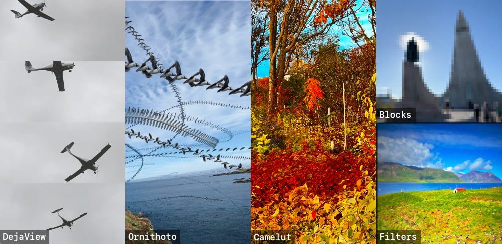
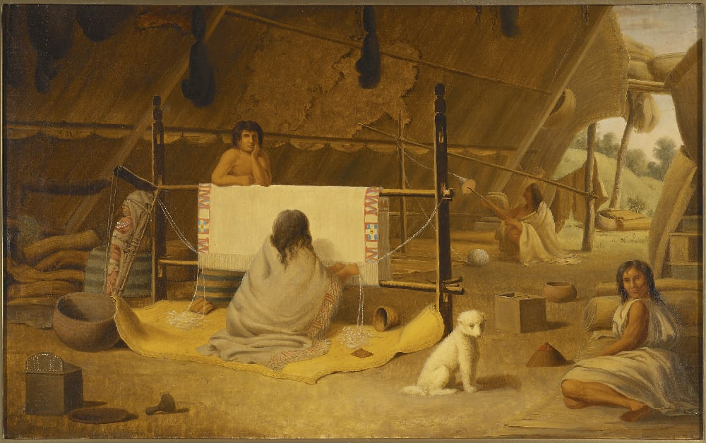

02026Q2 REYKJAVIK: An exciting Q1 with a few projects crossing the finish line. One project had a pilot test, another we managed to get to a spot where others can test and use it. Internally, we have another web app that's being tested. All this while we wait for a few project ideas to come together (or not).
Status Update
There is certainly an uncertainty in the immediate future. Geo-political issues, AI and more have spooked companies and investors. Some have slowed down, others have pulled-up the gates. This makes freelance projects difficult.
In Q2, we're writing our own future by reaching out to a few old friends and customers and either rekindling long gone projects (some due to COVID), pushing some internal projects bigger or starting some completely new ideas. If work is hard to find, make your own.
Luckily, we also have one large project that's been brewing for almost a year now finally getting the green light.
Snaptacular

We've rounded out our three major camera apps, with two more in testing.
DejaView: Reach back into the past to grab a collage of images.
Ornithoto: Blend multiple frames into a single image to capture motion.
Camelut: A bring-your-own filters camera.
Beta camera apps:
Filters: A shader playground to test different filters and effects.
Blocks: Create pixelated images inspired by the Game Boy camera.
📷 You can read more and download all our camera apps at: https://optional.is/apps/cameras/
Q1 Writing
In Q1, we published 7 articles, 6 weeknotes and maintained our ◍ Quarternotes newsletter schedule.
Omnibus 02025
https://optional.is/required/2026/01/01/omnibus-02025/
⸻
02025 TIL
https://optional.is/required/2026/01/14/02025-til/
⸻
02025 Annual Report
https://optional.is/required/2026/01/28/02025-annual-report/
⸻
Wyld's Great Globe
https://optional.is/required/2026/02/12/wylds-great-vr-globe/
⸻
Backups 3.0 Remote
https://optional.is/required/2026/02/26/backups-3-0-remote/
⸻
SXSW06
https://optional.is/required/2026/03/12/sxsw-02006/
⸻
Camelut
https://optional.is/required/2026/03/27/camelut/
⸻
📰 optional.is/newsletter/
🗓 optional.is/required/category/weeknotes
📡 optional.is/feeds/
Rotten Tomatoes
The movie ratings website Rotten Tomatoes started as a passion project in 01998 to rank Jackie Chan's movies. Over the next 30 years, it grew from a niche fan site into the box-office killer it is today.
Just remember, your niche idea might change an entire industry.
Extinct Dog Breeds

Back in May 02024, we talked about the extinct Turnspit Dog (https://optional.is/newsletter/s03e05/).
Another extinct dog, the Salish Wool Dog, was a white, long-haired, Spitz-type dog that was developed and bred by the Coast Salish peoples of what is now Washington state and British Columbia. Its primary purpose was for textile production, the same way we use sheep today.
The Salish Wool Dog is thought to have split from other breeds over 5,000 years ago. During the 1800s, the use of dog wool declined and the breed became extinct somewhere around the late 01800s or early 01900s.
Wikipedia keeps a list of extinct Dog Breeds. Most seem to be hunting or fighting related. Their lines died out as we stopped many of these practices.
https://en.wikipedia.org/wiki/List_of_extinct_dog_breeds
Merch
Disney SpellStruck: A word game with a magical twist!
Available on Apple Arcade.
Triagemail: Get unread email under control. An iOS app to check any email account. With only 4 options, get through all your unread email fast so you never miss anything important. $1.99 on the App Store.
Designing with Data eBooks. If you need to tell your story using data, pick up these books today. Now pay what you want for epub, mobi, pdf.
Prototypes to Products.
(optional.is) have worked with teams since 02011 to realize their ideas. From workshops to prototypes to products, we're there to help. Our experience working with small to enterprise companies brings a unique perspective on what's possible.
Contact us and say hello. 👋🏻